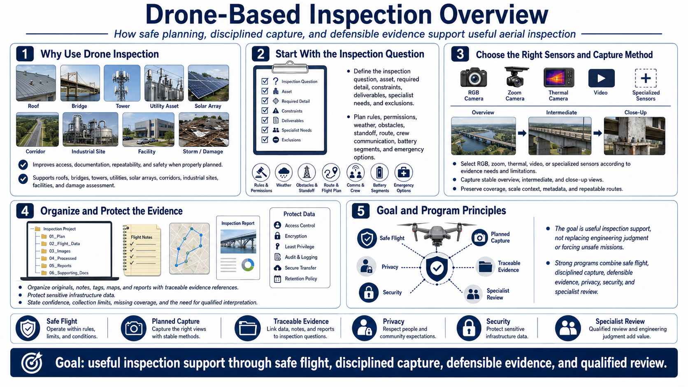

Course Summary and Key Takeaways
Connecting to LMS... Progress: in progress

Narration
Drone-based inspection improves access, documentation, repeatability, and safety when properly planned. It supports roofs, bridges, towers, utilities, solar arrays, corridors, industrial sites, facilities, and damage assessment.
Begin with a bounded inspection question, asset, required detail, constraints, deliverables, specialist needs, and exclusions. Plan current rules, permissions, weather, obstacles, standoff, route, crew communication, battery segments, and emergency options.
Select R G B, zoom, thermal, video, or specialized sensors according to evidence needs and limitations. Capture stable overview, intermediate, and close-up views with coverage, scale context, metadata, and repeatable routes.
Organize originals, notes, tags, maps, and reports with traceable evidence references. Protect sensitive infrastructure data and state confidence, collection limits, missing coverage, and need for qualified interpretation.
The goal is useful inspection support, not replacing engineering judgment or forcing unsafe missions. Strong programs combine safe flight, disciplined capture, defensible evidence, privacy, security, and specialist review.